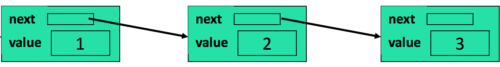
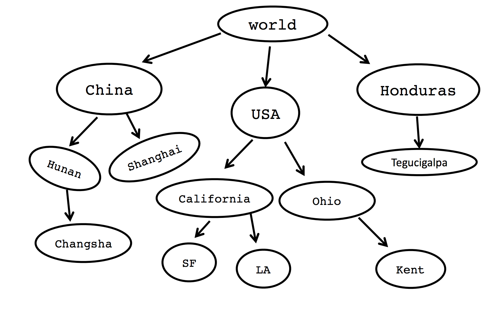
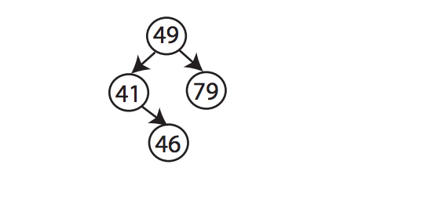
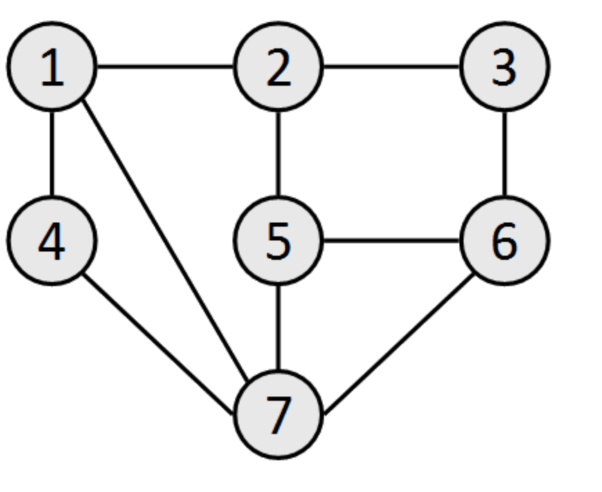
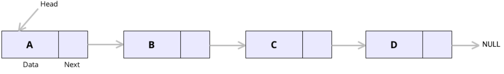
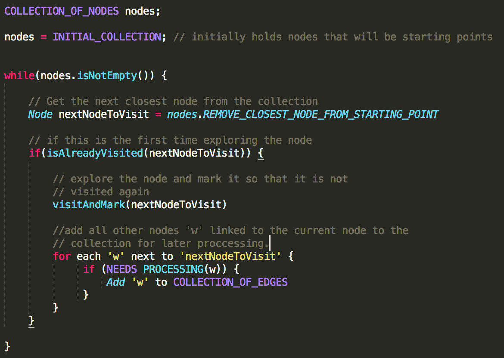

Clennita Justice
Sr. Program Manager, Product Strategy
Traversing linked structures
A Linked structure refers to a structure that has some sort of recursive relationship among its components (or nodes) as either a linearly linked structure, a tree structure or a graph structure.
In the above linear linked structure, an node is linked to a another node of the same type and so on. Linked structures can also be non-linear(trees or graphs):
Sometimes this relationship might not be obvious. In a game of chess for example, you can model the relationship between different states of a board as a linked structure. the same thing can be applied to the different states of a rubics cube. Every move made to transition the rubics cube from state A to state B links the two states.
So linked structures can manifest themselves in a number of ways in real life. So being able to traverse and manipulate these structures is important. There are generally two ways of traversing linked structures:
- Level order or Breadth first traversal
- Depth first traversal
Being able to perform these two operations on any linked structure will open up a new set of ways to approach problems that involve linked structures.
So what does it mean to traverse a linked structure breadth first? it means to visit each node in the order in which they are placed in the structure relative to a starting point.
For the above picture, if we start traversing the structure at node 49, then performing a breadth-first search on that structure means visiting the nodes in this order: '49', then the next two nodes to visit should be either '41' or '79' followed by node '46' at the end.
If we start traversing the above structure at node '1' on the top left side, then one(highlight this) potential order could be 1, 2, 4, 7, 5, 6, 7.
The order of BFS traversal for linearly linked stucture is straight forward. For the structure above, the order would be 'A', 'B', 'C', then 'D'.
A lot of other problems and algorithms on linked structures can be reduced to these two basic operations.
The general idea is the same. Before going 'deep' into the structure away from the starting, explore all nodes near the structure first. Traversing a graph breadth first can mean different things depending on what the structure represents. For example:
- If the structure represents a network of roads where the nodes represent intersections, then traversing this breadth first could mean finding the shrotest path between any two intersections.
- If the structure represents a social network where nodes represent ppl and relationships are established based on 'friendship', one insight we can get by traversing this type of graph breadth first is to provide friend and/or follower reccomendations.
- If the structure represents different states of a board game, and relationships are established based on moves made to transition the board from one state to another, traversing this structure can help answer questions such as the quickest way to get to 'win' or get to some state.
General implementation of Breadth first search traversals involve using data structures that provide operations that prioritize nodes closest to a starting node. For example, in most cases a queue data structure can be used to keep track of the order of nodes. In other situations, a priority queue can be used to prioritize nodes 'closest' to the starting point. Regardless of the choice of data structure, the general algorithm is the same:
The second way of traversing linked structure is depth first search. In this case, the algorithm goes deep into the structure farther away from the source to first explore the farthest set of nodes and then subsequently moves closer to the source. This is the opposite of traversing a linked structure depth first.
if we start performing a depth first traversal on above structure at node '1' on node 49, then the algorithm would go deep and explore node '46' first before backtracking visiting nodes '41' and '79' and eventually making its way back to the source.
When performing a depth first traversal of a structure, by the time the algorithm is on it's way back and is at node 'x', for example, it must have explored all the nodes farthest from 'x'. This is helpful in situations where we might need to combine or add up information the algorithm has gathered about all the nodes it's visited so far as it back tracks.
A number of problems and algorithms can be reduced to either a breadth first or depth first traveral of a linked structure. Algorithms and problems such as:
- Shortest path algorithms for weighted and unweighted graphs
- Algorithms for determining connectivity (Connected components) in directed and undirected graphs
- Various tree problems such as checking if a Binary tree is a BST
- Subset problems
- Recursion and backtracking problems.
At the end of the day, to implement the above algorithms or to solve a wide variety of problems, it becomes a pre-requisite to traverse the linked structure representing the problem either depth first or breadth first.